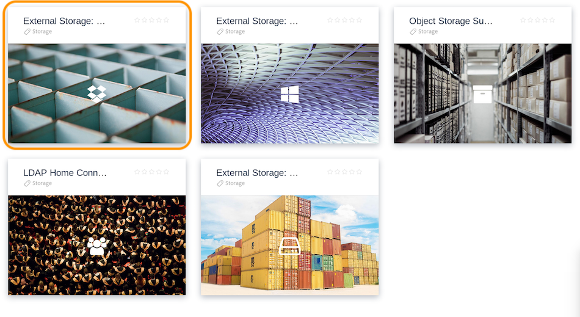
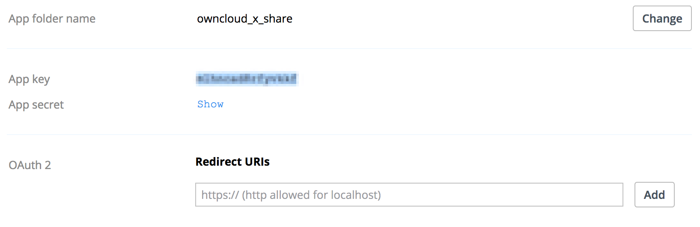
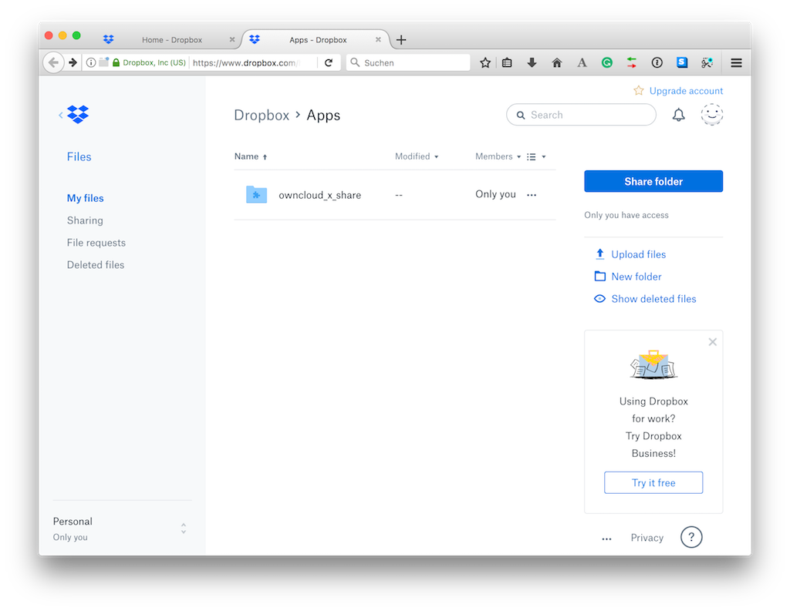

Dropbox¶
To connect Dropbox to your ownCloud installation requires four steps to be completed.
- Install the “External Storage: Dropbox” app from the ownCloud Marketplace
- Create a Dropbox app
- Create a Dropbox storage share
- Use the Dropbox share
Step One - Install the “External Storage: Dropbox” app from the ownCloud Marketplace¶

- Click Market in the ownCloud web UI dropdown menu on the left side
- Go to the Storage category
- select External Storage: Dropbox App
- Click INSTALL
Step Two - Create a Dropbox app¶
Next, you need to create a Dropbox app. To do that, open the new app creation form, where you see three questions:
- Choose an API –> “Dropbox API”
- Choose the type of access –> “App folder”
- Name your app
With all of the required details filled out, click the blue “Create app” button, in the bottom, right-hand corner. After you do that, the settings page for the application loads.
Important
Redirect URI: Here you must enter the exact URL of the page where you configure the storage.
Examples:
When configuring as an admin:
``http(s)://<<Server_Address>>/index.php/settings/admin?sectionid=storage``
When configuring as a user:
``http(s)://<<Server_Address>>/index.php/settings/personal?sectionid=storage``
Step Four - Using the Dropbox Share¶
After a Dropbox-backed share is created, a new folder is available under “All Files”. It has the name that you gave it when you created the share, and it is represented by an external share folder icon, as in the image below.
This links to a new folder in your Dropbox account, under “Dropbox > Apps”, with the name of the Dropbox app that you created.

Now, if you add files and folders in either the new Dropbox folder or the new ownCloud folder, after being synced, they will be visible inside the other.
